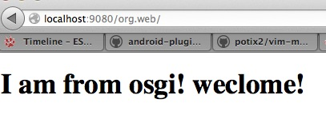
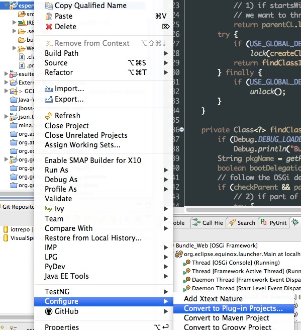
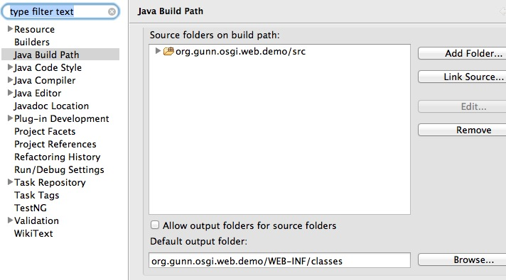
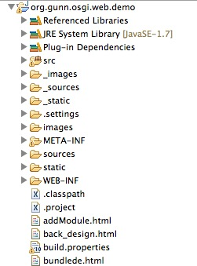

在OSGi中部署Web应用(一)
概述
在很久很久以前，我们用 ‘HTTP Registry’_ 在OSGi环境中注册Servlet，JSP以及静态资源。或者通过 HTTP ServletBridge 在Web容器中启动一个OSGi的方式来实现Web应用和OSGi的集合。在很多文章 [1] 中都有描述。 但是这样的方式让传统的Web程序员望而生畏他们熟悉的web.xml文件，WEB-INF文件夹在 ‘HTTP Registry’_ 方式中都不见了， 更要命的是对Filter都没有的支持还不全。 为了实现模块化他们甚至要重现学习OSGi的相关内容。所以他们停住了脚本。 不过现在好了，有了 org.eclipse.jetty.osgi.boot 这一切都发生了改变。
- 本文假定读者对如下知识有所了解：
- Java基础知识。
- Java中的Classloader机制。
- OSGi Plugin 开发的基本步骤。
什么是org.eclipse.jetty.osgi.boot
org.eclipse.jetty.osgi.boot是Jetty项目的一部分。本质而言他就是Jetty中的Start.jar在OSGi中的替代品。他会根据${jetty.home} 这个系统参数找到jetty.xml这个文件。并根据该文件的配置的在OSGi中启动一个真实的Jetty Server。 新启动的这个Jetty Server的classloader 会包括org.eclipse.jetty.osgi.boot 这个bundle的所能看到的所有类和其他资源，${jetty.home}/lib/ext 和${jetty.home}/resources中的所有类及其他资源。
部署传统的Web 应用
既然上面已经提到了org.eclipse.jetty.osgi.boot 启动的是一个标准的Jetty Server。 所以我们在部署的传统的Web 应用的时候，主需像在传统的Jetty Server中部署Web一样就可以了。 下面我们就一步一步做一遍。 在开始之前我们要确认一下所需要的库：
- JDK 1.5 向上。
- OSGi Framework， 推荐Equniox 下载地址为： http://download.eclipse.org/equinox/
- Jetty Bundles发行包 下载地址为： http://download.eclipse.org/jetty/updates/jetty-bundles-8.x/8.1.5.v20120716/
- 带有PDE 的Eclipse。 下载地址为： http://www.eclipse.org/downloads/
准备Target Platform
将OSGi Framework 和Jetty Bundles解压到同一个文件夹。假定该目录为${Target_Path}。打开Eclipse，通过菜单Windows –> Preferences –> target 打开Target Platform的设定界面，也可以通过Ctrl+3 输入”Target Platform”来打开Target Platform设定界面。

新建一个Target Platform, 把${Target_Path} 加入到该Target Platform中。 并勾选新建的Target Platform为当前Platform。
新建Debug Configuration
Ctrl+3 输入”Debug Configuration”, 打开Debugy 配置界面。在”OSGi Framework”下新建一个启动配置。 选取如下插件：
com.springsource.javax.xml.stream_1.0.1
com.springsource.net.sf.cglib_2.1.3
com.springsource.org.aopalliance_1.0.0
com.springsource.org.apache.commons.codec_1.3.0
com.springsource.org.apache.commons.logging_1.1.1
com.springsource.org.apache.juli.extras_6.0.18
com.springsource.org.apache.log4j_1.2.15
com.springsource.org.apache.xmlbeans_2.4.0
com.springsource.org.objectweb.asm.commons_3.1.0
com.springsource.org.objectweb.asm.tree_3.1.0
com.springsource.org.objectweb.asm_3.1.0
javax.annotation_1.1.0.v201105051105
javax.el_2.2.0.v201108011116
javax.servlet.jsp.jstl_1.2.0.v201105211821
javax.servlet.jsp_2.2.0.v201112011158
javax.servlet_3.0.0.v201103241009
org.apache.commons.collections_3.2.0.v200803061811
org.apache.commons.lang_2.3.0.v200803061910
org.apache.commons.pool_1.5.6
org.apache.geronimo.specs.geronimo-activation_1.1_spec_1.0.2
org.apache.geronimo.specs.geronimo-j2ee-management_1.1_spec_1.0.1
org.apache.geronimo.specs.geronimo-javamail_1.4_spec_1.3.0
org.apache.jasper.glassfish_2.2.2.v201112011158
org.apache.taglibs.standard.glassfish_1.2.0.v201112081803
org.aspectj.runtime_1.6.4.20090304172355
org.aspectj.weaver_1.6.4.20090304172355
org.eclipse.core.contenttype_3.4.1.R35x_v20090826-0451
org.eclipse.core.jobs_3.4.100.v20090429-1800
org.eclipse.core.runtime_3.7.0.v20110110
org.eclipse.equinox.app_1.3.100.v20110321
org.eclipse.equinox.common_3.5.0.v20090520-1800
org.eclipse.equinox.http.servlet_1.0.200.v20090520-1800
org.eclipse.equinox.preferences_3.4.0.v20110502
org.eclipse.equinox.registry_3.4.100.v20090520-1800
org.eclipse.jetty.continuation_8.1.0.v20120127
org.eclipse.jetty.deploy_8.1.0.v20120127
org.eclipse.jetty.http_8.1.0.v20120127
org.eclipse.jetty.io_8.1.0.v20120127
org.eclipse.jetty.jmx_8.1.0.v20120127
org.eclipse.jetty.jndi_8.1.0.v20120127
org.eclipse.jetty.nested_8.1.0.v20120127
org.eclipse.jetty.osgi.boot_8.1.0.v20120127
org.eclipse.jetty.osgi.httpservice_8.1.0.v20120127
org.eclipse.jetty.security_8.1.0.v20120127
org.eclipse.jetty.server_8.1.0.v20120127
org.eclipse.jetty.servlet_8.1.0.v20120127
org.eclipse.jetty.util_8.1.0.v20120127
org.eclipse.jetty.webapp_8.1.0.v20120127
org.eclipse.jetty.xml_8.1.0.v20120127
org.eclipse.osgi.services_3.3.0.v20110513
org.eclipse.osgi_3.7.2.v20120110-1415
org.hamcrest.core_1.1.0.v20090501071000
在启动阐述中加入
-Djetty.home=${jetty.home}
在${jetty.home} 这个目录中包括如下结构：
.
├── contexts
├── etc
│ └── jetty.xml
├── lib
│ └── ext
├── resources
└── webapps
这个时候启动刚才新建的Debug 配置。这时去访问etc/jetty.xml 配置的端口（我本机设定是9080端口，所以我的访问地址是http://localhost:9080）。会的到如下效果。

各位看官可能会说：这不就是一个404错误页面吗，还是Jetty的。有什么好炫耀的啊！真的没有炫耀，只是用他来说明一个问题! 说明我们的org.eclipse.jetty.osgi.boot 启动了一个Jetty服务。因为这个服务中没有部署任何web应用所以给他给出了一个404错误。 我们下一步就是去部署一个传统的Web应用。 我这个应用很简单，只有一个静态页面。war的具体结构如下：
META-INF/MANIFEST.MF
build.properties
WEB-INF/web.xml
index.html
把这个war直接放到${jetty.home}/webapps目录下。我们可以从控制台看到如下信息：
2012-12-17 18:21:28.193:INFO:oejd.DeploymentManager:Deployable added: jetty-home/webapps/org.web.war
2012-12-17 18:21:28.280:INFO:oejw.WebInfConfiguration:Extract jar:file:jetty-home/webapps/org.web.war!/ to /private/var/folders/z3/38fg6pfx37z6tbfw6878tps80000gn/T/jetty-0.0.0.0-9080-org.web.war-_org.web-any-/webapp
2012-12-17 18:21:28.599:INFO:oejsh.ContextHandler:started o.e.j.w.WebAppContext{/org.web,file:/private/var/folders/z3/38fg6pfx37z6tbfw6878tps80000gn/T/jetty-0.0.0.0-9080-org.web.war-_org.web-any-/webapp/}, /temp/jetty-home/webapps/org.web.war
2012-12-17 18:21:28.599:INFO:oejsh.ContextHandler:started o.e.j.w.WebAppContext{/org.web,file:/private/var/folders/z3/38fg6pfx37z6tbfw6878tps80000gn/T/jetty-0.0.0.0-9080-org.web.war-_org.web-any-/webapp/}, /temp/jetty-home/webapps/org.web.war
这个时候我们访问一下 http://localhost:9080/org.web/ 这个url。可以看到如下效果：
这个时候我们就已经将传统的Web应用部署到OSGi中来了。但是他现在还不能访问OSGi中资源！我们这就来干这活！
Web应用和OSGi互用资源
为了能让Web应用和OSGi能互访资源，除了那些非常暴力的方法外，还有一种相对优雅的方式。如果做呢？那就是把war转化成符合OSGi bundle的规范的jar。简单一句话：把war转化成bundle！ 不要害怕，因为我们现在的转化成本已经很低很低了。甚至可以忽略！所有要做的只是添加一个文件而已，而且这个文件还可以通过工具生成！
我们先做一遍。 在Eclipse中，将一个普通的Java项目通过如下图所示操作转化成Plugin项目。
这时根目录就会出现一个META-INF目录，下面有一个MANIFEST.MF文件。其中就包括了添加OSGi所需要的的信息。下面就是我做例子的文件的样子。
Manifest-Version: 1.0
Bundle-ManifestVersion: 2
Bundle-Name: Demo
Bundle-SymbolicName: org.gunn.osgi.web.demo
Bundle-Version: 1.0.0.qualifier
Bundle-Activator: org.gunn.osgi.web.demo.Activator
Bundle-ActivationPolicy: lazy
Bundle-RequiredExecutionEnvironment: JavaSE-1.6
Import-Package: org.eclipse.osgi.framework.adaptor,
org.eclipse.osgi.framework.internal.core,
org.eclipse.osgi.internal.baseadaptor,
org.eclipse.osgi.internal.loader,
org.osgi.framework;version="1.3.0"
Web-ContextPath: /web/demo
Require-Bundle: org.eclipse.jetty.osgi.boot;bundle-version="8.1.0"
Bundle-ClassPath: WEB-INF/classes,
.
需要说明的是将Bundle-ClassPath设定成WEB-INF/classes。 并将当前项目编译输出项目设定成WEB-INF/classes。如下图所示
这样Bundle也就能访问到当前项目中的类了。
另外在根目录下建立WEB-INF目录，并给定web.xml文件。Web需要的其他资源如jsp,html,css等就全部放到根目录下。
这个时候在启动配置中勾选中刚才新建的这个项目。并启动。你在控制通过ss命令查看是，你就会看到
386 ACTIVE org.gunn.osgi.web.demo_1.0.0.qualifier
通过浏览器访问 http://localhost:9080/web/demo 就可以看到你的web项目。
这个时候的web项目就是以Bundle的形式存在。他就是一个bundle。他可以使用OSGi中的任何服务和资源。
对于一个已有的war，可以使用 bnd 工具的wrap命令来转换成一个bundle。可以达到同样的效果。
Kid Capture开发手记
缘起
我四岁的儿子和他10岁的表哥迷上了我的电脑，只要我不用就和他哥跑到电脑前。随后就会传来一阵阵的狂笑。我过去一看发现他们抱着Photo Booth狂拍照片，狂拍视屏。被那些加上各种各样效果的视屏逗的开心死了。 这个时候我就在想我自己能否做一个这种小东西呢？让儿子在他妈妈的 瘟都死 （Windows）上也能用呢？ 整理整理思路就动手做吧！
需求
- 虽然是个小东西，但是也要简单列举一下需求。以确定开发的边界。
通过摄像头获取图像信息。显示到主界面上。
提供三个功能按钮
- 开始录制视屏
点击后就开始将摄像头获取的图片信息以视频流的形式保存成一个文件。同时还需要记录下麦克风的声音。保存成文件
- 停止录制
停止录制的过程，将声音文件和视频文件合并成一个小电影
- 拍照
将摄像头的当前帧保存成文件
第一个版本先做这么多吧！关于效果部分后续在跟进
技术方案
由于我预定的目标平台是 瘟都死 又不想使用笨重的Visual Studio。 所以决定采用如下的工具
图像采集
图像采集说白了就是从摄像头读取图像信息。在微软家有Direct.Show 可以用。从CodeProject网站上可以找到大量的示例，不是C#就是VB。 当然通过Python也可以调用，只是要求系统上一定要有Direct。所以放弃。最后在Youtube上看到一老外用10行代码完成了视屏采集。为之一动，对自己说就用他吧！他就是OpenCV。
1 2 3 4 5 6 7 8 9 10 11 12 13 14 15 16 | #!/usr/bin/python
# -*- coding: utf-8 -*-
import cv2.cv as cv
import cv2
capture = cv.CaptureFromCAM(0)
cv.NamedWindow("camera", 1)
while True:
img = cv.QueryFrame(capture)
cv.ShowImage("camera", img)
k = 0xFF & cv.WaitKey(10);
if k == 27:
break
|
- 4,5行导入OpenCV的包
- 7打开摄像头，并开始读取frame
- 11 ~ 13 读取摄像头的数据帧，并显示到窗体中。
- 15 ~ 16 判断有没有用户输入，如果是 esc键就退出。
上面的代码就是视屏捕捉的所有核心！超级简单吧！不过有个问题上面的代码只能使用 OpenCV 自己的图像界面，而且他的并不能集成到其他框架中来。所以要对他他做写改动才可以。
在他的官方网站上找到了一个例子
初次接触PyAudio
前两天无意间PyAudio，当时没觉得怎么地。今天拿过来练了练。发现这个小东西还真的不错。只需要简单的几行代码就可以完成录音和播放wav的功能。而且他还是跨平台的，在WinXp和Linux下运行良好（遗憾的是在Mac OS Lion下编译没通过）。
下面这个代码来源于实现了录音功能。 http://hyry.dip.jp:8000/pydoc/wave_pyaudio.html#pyaudio 。
1 2 3 4 5 6 7 8 9 10 11 12 13 14 15 16 17 18 19 20 21 22 23 24 25 26 27 28 29 30 31 32 33 34 35 36 37 38 39 40 41 42 43 44 45 46 47 48 49 50 51 52 53 54 55 56 57 58 59 60 | # -*- coding: utf-8 -*-
from pyaudio import PyAudio, paInt16
import numpy as np
from datetime import datetime
import wave
# 将data中的数据保存到名为filename的WAV文件中
def save_wave_file(filename, data):
wf = wave.open(filename, 'wb')
wf.setnchannels(1)
wf.setsampwidth(2)
wf.setframerate(SAMPLING_RATE)
wf.writeframes("".join(data))
wf.close()
NUM_SAMPLES = 2000 # pyAudio内部缓存的块的大小
SAMPLING_RATE = 8000 # 取样频率
LEVEL = 1500 # 声音保存的阈值
COUNT_NUM = 20 # NUM_SAMPLES个取样之内出现COUNT_NUM个大于LEVEL的取样则记录声音
SAVE_LENGTH = 8 # 声音记录的最小长度：SAVE_LENGTH * NUM_SAMPLES 个取样
# 开启声音输入
pa = PyAudio()
stream = pa.open(format=paInt16, channels=1, rate=SAMPLING_RATE, input=True,
frames_per_buffer=NUM_SAMPLES)
save_count = 0
save_buffer = []
while True:
# 读入NUM_SAMPLES个取样
string_audio_data = stream.read(NUM_SAMPLES)
# 将读入的数据转换为数组
audio_data = np.fromstring(string_audio_data, dtype=np.short)
# 计算大于LEVEL的取样的个数
large_sample_count = np.sum( audio_data > LEVEL )
print np.max(audio_data)
# 如果个数大于COUNT_NUM，则至少保存SAVE_LENGTH个块
if large_sample_count > COUNT_NUM:
save_count = SAVE_LENGTH
else:
save_count -= 1
if save_count < 0:
save_count = 0
if save_count > 0:
# 将要保存的数据存放到save_buffer中
save_buffer.append( string_audio_data )
else:
# 将save_buffer中的数据写入WAV文件，WAV文件的文件名是保存的时刻
if len(save_buffer) > 0:
filename = datetime.now().strftime("%Y-%m-%d_%H_%M_%S") + ".wav"
save_wave_file(filename, save_buffer)
save_buffer = []
print filename, "saved"
content
|